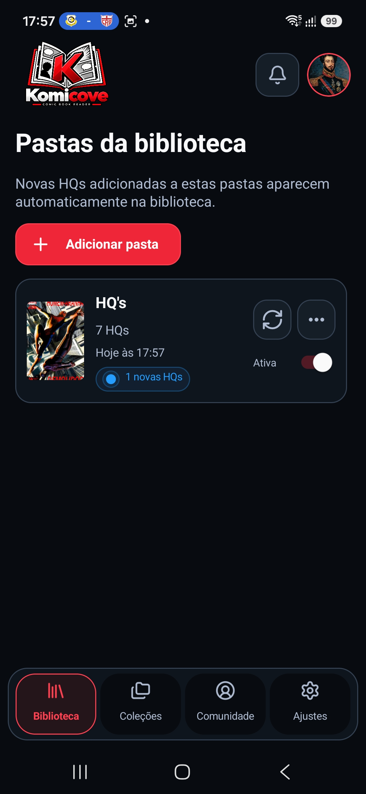

DOCUMENTATION
Install, add files and start reading.
Instructions for Windows, Linux and Android, including formats, backups and troubleshooting.
Getting started
Komicove reads your own local comics. Choose your device, install the official package, and begin in guest mode if you want to read without an account.
The app does not include comics. Add files you own or are allowed to use.
ON YOUR PHONE
Start on Android
Put a comic in a folder on your device before you begin. The Android app can watch that folder and show its comics in your library.
- Download the official APK and open it to install Komicove.
- Open the app and choose guest mode for local reading.
- In Library, tap Folders, then Add folder. Choose the folder containing your comics and allow access.
- Wait for the scan, return to the library, and tap a cover to read.

WINDOWS / LINUX
Start on desktop
Use the Windows installer or a suitable Linux package. Your local files remain on your computer.
- Download the package for your system and open Komicove.
- Choose guest mode if you only need your local library.
- Add the folder containing your comics from the library or Folders area.
- Open a cover and try the reader controls. The app remembers your progress.

Your library
Covers, search, favorites and reading progress help you find the next issue. Collections and monitored folders keep a larger library organized.
- Use search and sorting when your library grows.
- Mark favorites or group titles in collections.
- Keep the original comic files in a folder you control. Removing a library entry is not a substitute for managing the file itself.
The reader
Open a comic, then choose the reading direction and page layout that suit it. Available controls differ between desktop and Android.
- Try single page, double page, manga direction or vertical reading when available.
- Adjust fit, zoom and brightness for the screen you are using.
- Save a bookmark before leaving a favorite moment; reading progress is also kept locally.
Files and formats
Komicove recognizes common comic archives and PDFs. Support can vary by platform and by the tools installed on desktop.
Password-protected archives are not supported. If a file does not open, try a standard CBZ copy and check the installation notes.
Keep a backup
A backup protects app data, not the comic files themselves. Keep your original collection separately.
- On desktop, choose Backup in the sidebar and save the JSON file.
- On Android, open Settings, then Backup, and choose where to save the JSON file.
- Keep the JSON and your original comics in a safe place. Restore with the matching platform's restore action.
Desktop and Android backup formats are different. Neither backup includes the original comic files.
Help and feedback
Start with these quick checks. If the problem continues, report the device, app version and steps that reproduce it.
My library is empty
Check that you selected the folder containing your comics and granted access to it. Return to the library after the scan finishes.
A comic does not open
Confirm the file format and try another local file. On desktop, some archive formats require an external extraction tool.
I restored a backup but files are missing
Backups do not contain comic files. Put your originals back in an accessible folder and add that folder to the app again.